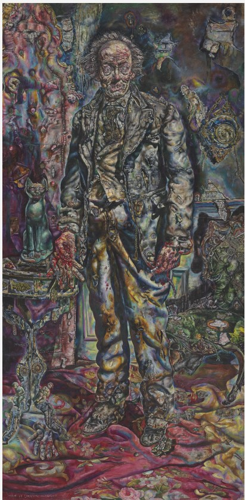

The Picture of Dorian Gray is a novel written by Oscar Wilde. It explores themes of beauty, morality, and vanity.
The story follows a young man named Dorian Gray who wishes that his portrait would age instead of himself. His wish is mysteriously granted.
"Every sin that I commit carves a new line of ugliness upon that face."
Visit doriangray.com for more information about the novel.